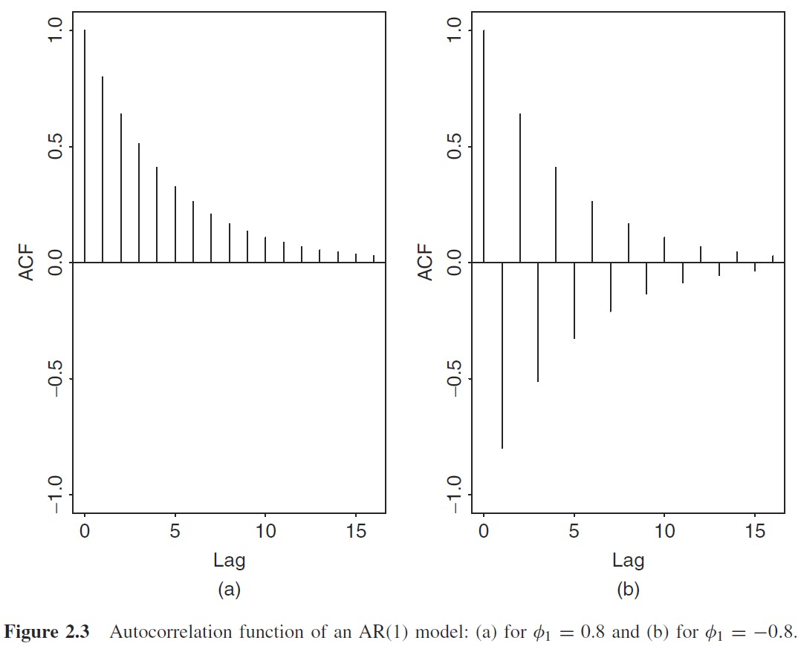

时间序列基本内容
2.1 基本假定
设时间节点\(t\)，有观测值\(\{r_1,...,r_{t-1}\}\)，这个观测值的集合（已知信息集）记作\(F_{t-1}\)，因而当前时点\(r_t\)可以分为可观测部分和不可观测部分：
可观测部分记作\(\mu_t\)，被定义为当前值\(r_t\)关于已知信息集的条件期望；不可观测部分定义为\(a_t\)，即扰动项，可被定义为两项的乘积：\(\sigma_t\)是条件标准差（扰动项），\(\epsilon_t\)则假定为独立同分布的随机变量，且服从标准正态分布。时间序列模型将同时研究\(\mu_t,\sigma_t\)对\(\{r_t\}\)序列性质的影响，并进行预测。
2.2 基本概念
通常，我们遇到的问题是这样的，给定随机对数收益率序列\(\{r_t|t = 1,...,T\}\)，而需要求知：（1）序列的矩信息；（2）序列矩信息是否与时间\(t\)相关。
那么，为了做这方面的工作，我们需要明确几个概念。
平稳性
较强的平稳性是严平稳，即分布不随时间变化而改变。
定义2.1 - 严平稳
对\(\forall t\)，且有任意正整数\(k\)个观测点\(\{t_1,...,t_k\}\)，若序列\(\{t_1,...,t_k\}\)的联合分布与序列\(\{t_{1+t},...,t_{k+t}\}\)的联合分布一致，则称序列为严平稳序列。
严平稳是很严格的条件，放松一定条件，只追求弱平稳（宽平稳）条件：前两阶矩信息（主要是均值、方差）与时间无关，也即\(r_t\)的均值、\(r_t\)与\(r_{t-l}\)的协方差，不随时间的变化而改变。从而有以下几条：
- \(E(r_t) = \mu\)，序列平均值为常数；
- \(Cov(r_t, r_{t-l}) = \gamma_l\)，序列任意两期间的协方差只与相隔期数相关。
弱平稳意味着，\(T\)个值在一个常数间隔水平中相同幅度波动。
严平稳不是宽平稳的充分条件
严平稳并不能推出宽平稳，因为宽平稳只追求前二阶矩的信息与时间无关，而对高阶矩信息没有要求，而严平稳严格限制了各阶矩信息。
自协方差
“我和过去的自己。”
定义\(\gamma_l = Cov(r_t, r_{t-l})\)为间隔为\(l\)的自协方差。由协方差的定义：
在宽平稳条件下，自协方差有如下性质：
- \(\gamma_0 = Var(r_t)\)；
- \(\gamma_{-l} = \gamma_l\)，即自反性；
遍历性
定义2.2 - 遍历性
如果一个平稳序列（或者有一个协方差平稳过程）\(\{r_t\}\)满足\(\sum_{j=0}^{\infty}|\gamma_{j}| <\infty\)，则称序列\(r_t\)是关于均值遍历的。
遍历性的用处在于，给定样本\(\{r_t\}\)，则应有：
- 当样本大小\(T \to \infty\)时，样本均值\(\bar r = \frac{1}{T} \sum_{t=1}^T r_t\)依概率收敛于\(E(r_t)\)，则该序列是关于均值遍历的。
- 类似的，如果:
对所有的\(j\)都成立，则称该序列关于二阶矩遍历。 3. 若一个平稳序列的自协方差\(\sum_{j=0}^\infty |\gamma_j| < \infty\)，则称该序列是关于均值遍历的。
这一条意味着当间隔逐渐拉长后，自协方差迅速趋近于0，即序列在长期上均值回归。
现实工作中，常常要求所用时间序列具有弱平稳性和遍历性。
自相关系数（ACF）
定义2.3 - 自相关系数
\(r_t\) 与\(r_{t-l}\)的相关系数称作\(r_t\)的，间隔为\(l\)的自相关系数：
显然，\(\rho_0 = 1\)，且\(\rho_l = \rho_{-l}\)，此外，与其他的Pearson相关系数一样，\(-1 \leq \rho_l \leq 1\)。另外，若对于任意的\(l 0\)，都有\(\rho_l = 0\)，则称该弱平稳序列为不相关序列。
样本自相关系数
对应上面的内容，样本的自相关系数可以表示为：
若序列\(\{r_t\}\)是独立同分布序列，且\(E(r_t^2) < \infty\)，对于任意正整数\(l\)，则\(\hat \rho_l\)渐近服从于均值为0，方差为\(1/T\)的正态分布。这个定义可以用于检验市场是否有效。如果市场收益率序列是不相关的序列，那么序列就和时间毫无关系，从而无法预测，这代表着市场实现了强有效（与过去信息毫无关联）。这个可以通过检验单个（或若干个）ACF值是否为0来实现：
(1) 单个ACF的一期检验：对间隔为1的样本，可设立原假设\(H0: \rho_1 = 0\)，备择假设为\(H1: \rho_1 \not = 0\)。并进而构造t统计量：\(t = \hat \rho_1 / \sqrt{1/T} = \sqrt{T} \hat \rho_1 \sim N(0,1)\)。如果t统计量超过了置信分位点，则拒绝原假设，从而认为市场并不完全有效。
(2) 单个ACF的多期检验：对给定正整数\(l\)（间隔为\(l\)的样本），和原假设、备择假设\(H0: \rho_1 = 0\),\(H1: \rho_1 \not = 0\)，有t统计量。
若\(\{r_t\}\)为平稳高斯序列且满足\(j l\)时有\(\rho_j = 0\)，则这个\(t\)统计量渐近服从标准正态分布。
(3) 多个ACF的检验（Ljung-Box检验）。对于原假设\(H0: \rho_1 = \rho_2 = ... = \rho_m = 0\)和备择假设\(H1: \rho_i \not = 0\)，则有基于卡方分布的Ljung-Box检验量：
该分布渐近服从自由度为\(m\)的卡方分布，卡方分布是单边检验，若\(Q(m) \chi_i^2 (m)\)，则拒绝原假设，证明序列并非不相关的。在实务中，通常将\(m\)设定为\(\ln(T)\)。
总体来讲，样本的自相关函数（ACF）在线性时序模型中起着重要的作用：一个线性时序模型完全可由ACF来决定。例如CAPM中，通常认为资本收益率不可预测且无相关性，那么检验样本的\(\rho_l\)是否为0，即可判定是否满足这一假定。
白噪声
定义 2.4 - 白噪声
如果\(\{r_t\}\)是一个具有有限均值和有限方差的序列独立同分布随机变量序列，则称\(\{r_t\}\)为一个白噪声序列。特别的，如果\(r_t \sim N(0,\sigma^2)\)，则称该序列为高斯白噪声序列。
(有限均值和有限方差可以确认这个序列弱平稳且遍历。)
白噪声性质与\(ACF = 0\)等价。白噪声并不一定是高斯白噪声（不一定服从正态分布），其核心要素在于有限均值方差，且独立同分布。
线性时间序列
定义 2.5 - 线性时间序列
时间序列\(\{r_t\}\)称为线性时间序列，如果可以写作以下形式：
即\(r_t\)可以表示为其均值和之前若干期扰动项的加权平均。
其中\(E(r_t) = \mu\),权重序列\(\phi_0 = 1\),\(\{\alpha_t\}\)是零均值的i.i.d序列。
那么有：
- \(Var(r_t) = \sigma_a \sum_{i=0}^{\infty} \phi_i^2\)，其中\(\{\phi_i^2\}\)应当收敛，从而使方差有限。
- 自协方差如下：
- 自相关系数如下：
对于弱平稳序列，对于\(j \to \infty\)，有\(\phi_j \to 0\)，从而随着间隔\(l\)的增大，\(\rho_l \to 0\)。那么，遥远过去的信息对当前收益率的影响逐渐趋向于0（当前信息对过去信息的线性依赖逐渐消失），从而出现自相关的截尾性。
2.3 基本模型1：自回归模型（AR）
即AutoRegressive model。最简单的自相关模型是AR(1)，即对\(r_t\)和\(r_{t-1}\)建立模型。
其中\(a_t\)为高斯白噪声序列。那么：
- 在已知\(r_{t-1}\)的条件下:
- 在给定\(r_{t-1}\)的条件下，\(r_t\)与\(r_{t-i}(i 1)\)无关。即AR(1)对于远期信息，存在Markov性；或者说对于AR(\(p\))模型对于超过\(p\)期的信息存在Markov性。
也就是说，AR(p)模型中，\(r_t\)只与最近\(p\)个观测值相关。
AR(1)的性质
假定序列\(\{r_t\}\)弱平稳。并设\(E(r_t) = \mu, Var(r_t) = \gamma_0, Cov(r_t, r_{t-j}) = \gamma_j\quad \forall j\)，其中\(\mu,\gamma_0\)为常数，而\(\gamma_j\)与\(j\)相关。下面推导\(\mu, \gamma_0\)的具体形式：
AR(1)的期望性质
AR(1)的方差性质
而对于\(\gamma_0\)，则不能直接两边取方差，而要剔除其交叉项。利用前面的\(\phi_0 = (1-\phi_1)\mu\)，将\(AR(1)\)改写为：
令\(X_t = r_t - \mu\)，从而有：
从而说\(r_t - \mu\)为\(a_{t-i}, i \geq 0\)的线性加权，又因为\(\{a_t\}\)独立同分布，从而有：
将上式带回\(r_t - \mu = \phi_1(r_{t-1} - \mu) + a_t\)，并取期望：
从而有：
由以上内容，我们可以得到AR(1)模型弱平稳的一个充要条件：\(|\phi_1| < 1\)。将\(\phi_0 = (1-\phi_1)\mu\)带入AR(1)模型，则AR(1)可以表示为：
即AR(1)可以表示为均值（可能是市场均值）和上期值的加权平均，整得很像CAPM。
AR(1)的自相关系数（ACF）性质
从式\(r_t - \mu = \phi_1(r_{t-1} - \mu) + a_t\)开始，两端乘以\(a_t\)，取期望：
而对式\(r_t - \mu = \phi_1(r_{t-1} - \mu) + a_t\)两端同乘\(r_{t-l} - \mu\)，取期望：
如果\(l = 0\)，则\(\gamma_l = \phi_1 \gamma_1 + \sigma_a^2\)，否则\(\gamma_l = \phi_1 \gamma_{l-1}\)。由以上内容和式(AR1.Gamma)可导出AR(1)的ACF满足：
由于\(\phi_1 \in (-1,1)\)，所以ACF会呈现两种典型性的指数级衰减，如Tsay书Figure 2.3。

AR(2)的性质
将自回归模型扩张到2期：
仍然从期望、方差、ADF上讨论其性质：
AR(2)的期望和方差
类似于前面AR(1)，其矩信息应当有如下性质：
而利用\(\phi_0 = (1-\phi_1 - \phi_2)\mu\)，从而有：
类似的，对式(0)左右同乘\((r_{t-1} - \mu)\)或\((r_{t-2} - \mu)\)，并左右同取期望，则可以获得\(\gamma_1, \gamma_2\)的表达式：
联立式(1-3)，利用矩阵方程求解（利用Cramer法则）
AR(2)的ADF性质
对式\((0)\)同乘\((r_{t-l} - \mu)\)并取期望:
当\(l 0\)时，\(E[(r_{t-l} - \mu) a_t] 0\)，从而有：
该方程称作AR(2)的矩方程。对于\(l=0\)，有\(\rho_0 = 1\)，而\(\rho_1 = \phi_1 / (1-\phi_2)\)。对于更大阶的情况，两边同除以\(\gamma_0\)，有：
平稳AR(2)序列的ACF满足二阶差分方程：
其中\(B\)称作“向后推移算子”，其定义为\(B \rho_l = \rho_{l-1}\)，即ACF的向后推移。
（注：有的论著中采用向后推移算子\(L\)，且有\(L\gamma_l = \gamma_{l-1}\)。）
AR(2)的差分
已知时间序列\(\{r_t\}\)在\(t\)时刻的值\(r_t\)和\(t-1\)时刻的值\(r_{t-1}\)，二者相减之差\(dt = r_t - r_{t-1}\)，得到的新序列\(\{dt\}\)称作\(\{r_t\}\)的一阶差分，如果再对\(\{dt\}\)序列再做一次差分，则新序列是\(\{r_t\}\)的二阶差分。差分操作可以将非平稳的序列近似转换为弱平稳序列。回到上面的AR(2)方程中，式(4)决定了平稳AR(2)模型的性质，而与这个差分方程对应的是AR(2)的特征方程：
对AR(2)特征方程的推导
该部分的证明并未被Tsey给出。
对于\(p\)阶差分方程:
定义向量\(\epsilon_t = [r_t, r_{t-1}, ..., r_{t-p+1}]^T\)。另定义矩阵：
那么式(6)可以被表示为一个一阶的向量系统：
进一步迭代式(7)，从一阶向量系统迭代\(t\)次，成为\(t\)阶向量系统：
把向量的具体形式带到向量系统中：
这个大方程组有什么用呢？第一行（第一个方程）就刻画了\(r_t\)的结构。令\(f_{(pq)}^{(t)}\)表示\(F^t\)中的第\((p,q)\)个元素，则有：
对这个向量系统进行推广，做一个\(j\)期的迭代：
从上式可知\(f_{(11)}^j = \partial r_{t+j} / \partial a_t\)，该量被称作“动态乘子”，表示一单位\(a_t\)的变化（扰动）对\(r_{t+j}\)的影响。由于该量是\(F\)的最左上角元素，因此只需寻找\(F\)矩阵的特征值，即可同等刻画这一个扰动影响。即解方程：\(|F - \lambda I_p| = 0\)，其中\(\lambda\)为特征值。对于AR(2)模型，有：
其中\(x = 1/\lambda\)，即\(F\)特征值的倒数，用二次方程求根公式：
得到的特征根为双根\((\omega_1,\omega_2)\)，要讨论实根和虚根问题。
- 如果两根均为实根，则方程分解为：\((1-\omega_1 B)(1-\omega_2 B)\)的形式，此时AR(2)可以表示为两个AR(1)的叠加。AR(1)的ACF曲线取决于\(\phi_1\)的取值，那么这种AR(2)的ACF曲线就是两个AR(1)叠加起来，即两个指数函数的复合，其图形取决于两个\(\phi\)的取值。
- 如果两根均为虚根，那么\(\omega_1,\omega_2\)为复数共轭对，而复数共轭对可以表示为极坐标中的正弦/余弦曲线，这种情况下的ACF表示为减幅的正弦、余弦波。该种情况在商业和经济应用上比较重要，正弦波形式的ACF可以导致商业环/商业周期的出现。带一对复共轭特征根的AR(2)模型的随机环的平均长度（减幅正弦函数的平均周期）可以由以下式子给出：
如果将复数解记为\(a \pm b_i\)的形式，则\(\phi_1 = 2a, \phi_2 = -(a^2+b^2)\)，则上式可写为：
进而引出AR(2)模型平稳的必要条件：AR(2)模型两个特征根(\(\omega\))的模都要小于1。对应特征方程（式5）的两个解(\(x\))的模都要大于1。该条件同样适用于AR(1)模型。其对应特征方程\(1-\phi_1 x = 0\)，对应特征根解为\(\omega = 1/x = \phi_1\)，则该必要条件要求\(|\phi_1| < 1\)。而对于AR(p)模型呢？对于AR(p)模型，其对应的多项式方程为：
那么序列\(\{r_t\}\)平稳的条件就是所有解的模都要大于1，即所有特征根的模都小于1，而这个条件通常难以保证，因此尽量要采用低阶AR模型，因而牵扯到重要的问题：定阶。
AR模型的定阶
定阶，即确定AR(p)中的唯一参数：\(p\)。有几种主要的方法，如偏自相关函数（PACF）、信息准则法。
第一种， 偏自相关函数法。考虑一连串的AR模型：
对这两个模型做估计，那么\(\hat \phi_{22}\)表示在AR(1)模型基础上，添加\(r_{t-2}\)对\(r_t\)拟合的贡献。以此类推，不断尝试和验证，我们称\(\hat \phi_{ll}\)为\(r_t\)的间隔为\(l\)的偏自相关函数(PACF)，这个过程中每一个\(\hat \phi_{ll}\)就可以形成一个估计值的向量。由于AR模型的PACF具有截尾性质，因而适合用于定阶。计算PACF主要依赖于Yule-Walker方程。
在讲Yule-Walker之前，显然有\(AR(1)\)的PACF和ACF相等，别问我为什么，问就是定义所得。
Yule-Walker方程组
Yule-Walker方程组：对于AR(p)模型，两边同时乘以\(r_{t-k} (k \geq 1)\)后取期望。要注意的是，以下所指\(\phi_k\)，均为AR(p)中的第\(k\)的\(\phi\)参数，放在上面两式的语境中，应当称作\(\phi_{pk}\)，而只有\(\phi_{pp}\)（也就是下面Yule-Walker方程中的\(\phi_p\)）才是AR(p)模型在\(p\)阶处的PACF。
当然，两边同除\(\gamma_0\)，有：
以\(\gamma_k\)表达式，将\(k = 1,...,p\)分别写出来，形成下面的矩阵方程。
该方程组即为Yule-Walker方程组。
为了求解PACF，我们需要让\(\phi_p\)暴露出来，从式\(\eqref{eq: Yule-Walker eqs}\)左右同除以\(\gamma_0\)，有：
解这个方程组的好办法是Cramer法则。将上式左侧系数阵的第\(p\)列（即最后一列）替换为等号右边的向量，分子即为这个新矩阵的行列式，而分母是原系数矩阵的行列式，所求得的商即为\(\phi_{p}\)的解，即AR模型系数所谓的Yule-Walker估计量。如果\(\{r_t\}\)是AR(p)过程，且\(\{a_t\} \sim N(0,\sigma_a^2) i.i.d.\)，则Yule-Walker估计量\(\hat \phi_p\)服从分布：
其中\(n\)为样本容量。基于此可以求得Yule-Walker估计量的置信区间。
第二种，信息准则法。信息准则（Information Criteria，IC）本质上是对残差的调整，常用的信息准则包括Akaike IC(AIC，赤池信息准则)和Bayesian IC(BIC，贝叶斯信息准则)。
- 赤池信息准则。AIC的形式为：
特别的是，对于高斯AR(l)模型，AIC的形式为：
- ==贝叶斯信息准则==。BIC基于AIC进行调整，对于高斯AR(l)模型，其形式为：
BIC的改进位于第二项，将分子上的\(2\)改为\(\ln(l)\)。对于样本容量较大的情形，基于BIC的定阶方法倾向于选择更小阶的AR模型。
争议处理：PACF，AIC，BIC结果存在偏差时，可以优先按照BIC意见定阶，也可以选择三选二的方式，投票得出定阶方案。
AR模型的参数估计
AR模型的估计采用条件最小二乘估计（CLS）。在给定前\(p\)个观测值的条件下，进行多元线性回归。在前\(p\)个观测值的条件下，利用其他观测值回归下列模型：
对应的残差为\(\tilde a_t = r_t - \tilde r_t\)，称\(\{\tilde a_t\}\)为残差序列，而该残差序列的残差平方和（样本外残差平方和）为：
而条件最小二乘的任务是最小化样本外残差平方和：
其中，\(y = [\hat r_{p+1}, \hat r_{p+2}, ..., \hat r_T]^T\), \(\beta = [\hat \phi_0,...,\hat \phi_p]^T\)，\(X\)是对\(y\)向量进行拟合的式子中所有变量的集合。且\(X\in \mathcal{R}^{(T-p)\times (p+1)}, \beta \in \mathcal{R}^{(R+1) \times 1}, y \in \mathcal{R}^{(T-p) \times 1}\)。对\(\hat \sigma_a^2\)做微分求最值，解得经典老式子：
备注两则：
- 如果上面的\(\{y_t\}\)的分布未知，CLS估计所得的参数仍然是合理的。
- 如果\(\{y_t\}\)样本的联合密度\(P(y_1,...,y_T)\)已知，则除了CLS，也可使用MLE来估计，CLS和MLE对参数的估计值是一致的，但MLE对方差的估计有区别：
模型检验
该工作用于验证模型是否充分，或者参数是否冗余。AR模型的检验工作采用Ljung-Box检验。其思想为，如果模型充分，则残差序列\(\{\hat a_t\}\)应当为白噪声，而检验序列是否为白噪声的工作可以用Ljung-Box检验进行，它将检验序列与一般白噪声的接近程度：
其中\(g\)为AR模型中的参数个数。
模型的拟合优度
拟合优度，就是\(R^2\)：
其中\(\bar r = \frac{1}{T-p} \sum_{t = p+1}^T r_t\)。如果序列平稳，则\(R^2\)越大，模型拟合情况越好。但对于时间序列来说，变量个数对\(R^2\)会产生影响，为了剔除自变量个数对\(R^2\)的影响，时间序列中引入了Adjusted \(R^2\)，其形式为：
大多数情况下，Adjusted \(R^2\)仍在\((0,1)\)之间，但是可能会出现超出该范围的情况，通常需要分析该现象出现的原因。Adjusted \(R^2\)有一个好，如果新加入的变量\((X)\)对回归的贡献较少，则Adjusted \(R^2\)反而可能降低，这就体现了Adjusted \(R^2\)对模型自变量数量的限制作用。
AR模型的预测
设时间指标\(h\)为预测原点，\(l\)为预测步长，想预测\(r_{h+l}\)。定义\(\hat r_h(l)\)为最小均方误差下的预测，则\(\hat r_h(l)\)应当满足：
其中\(g\)为时点\(h\)下所得的信息函数，即时点\(h\)下所能得到的所有信息\(F_h\)的函数。
(1) 向前一步预测。让我们想想AR(p)中\(r_{h+1}\)的结构是：
而\(h\)时刻下拥有的信息集是什么？\(F_h = \{r_h,r_{h-1},...\}\)，那么就可以得到\(r_{h+1}\)点预测的条件期望。从而有：
那么，这个条件期望和原本的\(r_{h+1}\)之间的区别就在于最后的扰动项\(a_{h+1}\)，也就是预测的误差：
而误差的方差是：
如果\(\{a_t\}\)是服从正态分布的，那么\(\{r_t\}\)序列向前一步预测（即\(r_{h+1}\)）的点预测具有的预测区间即为\([\hat r_h(1) - \eta_\alpha \sigma_a, \hat r_h(1) + \eta_\alpha \sigma_a]\)，其中\(\eta_\alpha\)是对应置信度\(\alpha\)的置信区间上下界。
(2) 向前两步预测
对第二步的预测，其作为条件的信息集仍然为\(F_h\)。原始的\(r_{h+2}\)结构为：
而预测值的结构如下，注意的是，对于第二步预测，\(r_{h+1}\)仍然是未知的（你仍然站在时点\(h\)往后看）：
那么预测误差为：
其方差为：
显然，随着预测步长的增加，进一步预测结果的不确定性会逐渐增加。
(3) 向前\(l\)步预测。
向前\(l\)步预测的点值为：
对应的预测值为：
如果\(l - i \leq 0\)，那么那部分就是包含在\(F_h\)中的，即已知精确值的部分。其预测误差的结构为：
(本来是有式子的，不想推了)
均值回转(mean reversion)现象
对于一个平稳的AR(p)模型，当\(l \to \infty\)时，\(\hat r_h(l)\)收敛于\(E(r_t)\)，即预测的有条件均值逐渐逼近到无条件均值（你已知的信息已经不足以预测很靠后的值了，你的预测几乎起不到任何作用）。而均值回转现象存在“半衰期”，对于\(AR(1)\)模型，其均值回转的半衰期为\(k = \ln (0.5/|\phi_1|)\)。
2.4 基本模型2：滑动平均（MA）
对于无穷阶的AR模型，应有：
当\(i \geq 1\)时，设\(\phi_i = -\theta_1^i\)，则较遥远的过往信息对当下值的影响就变得微不足道了，上式变为：
为了使模型平稳，\(\theta_1\)的绝对值应当小于1。对上面做移项：
同理，我们还能得到：
两式相减，能够得到：
其中\(C_0\)为常数，\(a_t \sim N(0,\sigma_a^2)\)这样，\(r_t\)的无穷阶AR模型就变成了当期扰动项和往期扰动项的线性加权。该改进后的模型被称作一阶滑动平均模型，即MA(1)模型。显然，MA(1)仍然是平稳的。类似的，MA(q)模型的形式为：
MA模型的基本性质
MA模型的平稳性
MA(q)模型总是平稳的，因为：
-
MA(q)是有限个(\(q\)个)白噪声的线性加权;
-
其前两阶矩不随时间变化而变化（满足宽平稳条件）；
对于MA(1),有\(r_t = C_0 + a_t - \theta_1 a_{t-1}\)，对应均值方差为：
对于MA(q)模型，其均值方差为:
- 自协方差只与\(l\)有关。以MA(1)为例，若\(C_0 =0\)，则有：
(第三个等号的原因在于，\(r_{t-l}\)是往期\(a_t\)的线性加权，而这些往期扰动与当期扰动之积的期望为0。)
a. 若\(l=1\)，则\(\gamma_1 = -\theta_1 \sigma_a^2\);
b. 若\(l>1\)，则\(\gamma_l = 0\)。
总之，\(\gamma_l\)甚至与时间\(l\)无关，在任何情况下均为常数。
由以上三条可知，MA(q)模型必然是平稳的。
MA模型的ACF
MA(1)的ACF很漂亮，\(\rho_0 = 1,\rho_1 = \gamma_1 / \gamma_0 = \frac{-\theta_1}{1+\theta_1^2}, \rho_l = 0 (l>1)\)。即MA(1)的自相关系数只有在1阶处非零（间隔为1之后是截尾的），而该值的范围为\([-0.5,0.5]\)，最小值取在\(\theta_1 = 1\)，最大值取在\(\theta_1 = -1\)。很明显，MA(1)模型的一个美德就是，ACF曲线会在滞后期内迅速衰减到0。
进一步，MA(2)模型：\(r_t = a_t - \theta_1 a_{t-1} - \theta a_{t-2}\)（方便起见，假定\(C_0\)为0）的ACF为：
其中\(\rho_1\)的范围为\([-1/\sqrt{2},1/\sqrt{2}]\)，\(\rho_2\)范围为\([-1/2,1/2]\)。MA(2)在间隔为2之后截尾，从此归纳，MA(q)至于其前q个滞后项相关，这一点也称作MA的有限记忆性。
MA模型的可逆性
改写MA(1)模型，则有：\(a_t = r_t + \theta_1 a_{t-1}\)，重复迭代：
该方程称作AR(\(\infty\))过程，表示当期扰动项\(a_t\)为现在及过去所有期收益率的线性组合，且\(|\theta_1| < 1\)，这就是MA(1)的可逆性（MA由AR变化得来，也可以变化出AR）。对于MA(q)模型，有\(r_t - C_0 = (1-\theta_1 B - \theta_2 B^2 - ...) a_t\)，其特征方程为：
该方程解落在单位圆之外，则MA(q)模型可以转化为AR(\(\infty\))过程，即MA(q)可逆。
如果可解，则特征方程可以转化为\((1-\lambda_1 X)(1-\lambda_2X)...(1-\lambda_q X) = 0\)，那么方程解均落在单位圆之外，等价于所有\(|\theta_i| \leq 1\)，即特征方程根的模均大于1。
MA模型的估计
MA模型的定阶主要看ACF的取值。而估计主要采用两种方法：（1）条件似然法；（2）精确似然法。
MA模型的PACF是拖尾的，而ACF是截尾的，因此需要用ACF来指导定阶。下面讲到ARMA模型时会对ACF和PACF指导定阶的准则做更细致的讲解。
条件似然法
设初始扰动\(a_0 = 0\)，有\(a_1 = r_1 - C_0\)，\(a_2 = r_2 - C_0 + \theta_1 a_1\)，......。递归得到最优的扰动序列，再进行参数估计。
对于MA(1)模型，即\(r_t = \mu + a_t + \theta_1 a_{t-1}, a_t \sim N(0,\sigma_a^2)\)。我们令\(\Theta = (\mu, \theta_1, \sigma_a^2)^T\)。如果\(a_{t-1}\)已知，那么\(r_t\)的所有不确定性都存在于\(a_t\)上，那么有：
其边际密度函数为：
从\(a_0 = 0\)开始，则\(r_1 |a_0 = 0 \sim N(\mu,\sigma_n^2)\)，给定观测值得\(a_1 = r_1 - \mu\)，带入到式(8)$中：
当\(a_1\)确定，则\(a_2 = r_2 - \mu - \theta_1 a_1\)，进而重复迭代\(\{a_t\}\)和\(\{r_t\}\)序列，从而有第\(t\)个时刻观测值的条件密度：
进而得到条件似然函数：
对\(\Theta\)向量中所有的元素挨个求偏导，但要注意：
(1) 由\(a_t = r_t - \mu - \theta_1 a_{t-1}\)，可进一步推导：
如果\(\theta_1\)的绝对值极小，则\(a_0 = 0\)的假定对估计的影响会迅速消失，可以忽略不计，所以条件似然法是MA模型的良好估计。
(2) 如果\(\theta_1 1\)，则\(a_0=0\)的假定会随着时间的增加而不断放大，因而MA的条件似然估计在此时很可能是存在偏差的，因而估计不合理，需要做调整：将\(\theta\)变为\(1/\theta\)再行估计（这合理吗？）。
精确似然法
将初始扰动作为一个待估计变量，与其他参数同时进入模型做联合估计。
模型评估：拟合情况的评估仍然采用Ljung-Box检验，以判断残差序列是否为白噪声。
MA模型的预测
设预测原点为\(h\)，\(F_h\)为此处的已知信息集：
- MA(1)向前一步预测。直接代入式子，有\(r_{h+1} = C_0 + a_{h+1} - \theta_1 a_h\)，而MA的点预测则为\(\hat r_h(1) = E(r_{h+1} | F_h) = C_0 - \theta_1 a_h\)，点预测与真值的误差（期望误差）为：\(e_h(1) = \hat r_h(1) - r_{h+1} = a_{h+1}\)，期望误差的平方为\(Var(e_h(1)) = \sigma_a^2\)。相较于MA(1)模型，预测值的期望和方差均发生了改变。
- MA(1)向前两步预测。原始值为\(r_{h+2} = C_0 + a_{h+2} - \theta_1 a_{h+1}\)，而预测值为\(\hat r_h(2) = E[r_{h+2}|F_h] = C_0\)，预测误差为\(e_h(2) = a_{h+2} - \theta_1 a_{h+1}\)，其方差为\(Var(e_h(2)) = (1+\theta_1^2)\sigma_a^2\)，向前两步预测结果的均值方差与MA(1)均相同（从而实现了均值回归, MA(1)模型实现均值回归只需2阶，而AR则需要较长期预测才能逐渐接近无条件期望）。
- MA(2)向前\(l\)步预测。真值为\(r_{h+l} = C_0 + a_{h+l} - \theta_1 a_{h+l-1} - \theta_2 a_{h+l-2}\)，对应\(l\)取值不同，已知项也不同：
因而可知，MA(2)在第三期之后预测值即收敛到无条件均值。类似的，MA(q)的均值回归在\(q+1\)期预测处即实现均值回归。
AR和MA模型的小结
- 定阶。对于MA模型，ACF是定阶的有效工具，因为MA(q)序列的ACF必然\(q\)步截尾（第\(q+1\)步的ACF必然为0）；而对于AR模型，则采用PACF来定阶。因为AR(p)过程的PACF必然\(p\)步截尾。
- 平稳性。MA序列总是弱平稳的，参照章节“MA模型的基本性质”的相关内容；而AR序列平稳存在条件：特征根的模都小于1，或者说特征方程的解都在单位圆之外。
- 对偶关系。AR和MA模型其实是对偶的，如果基于AR模型分析比较复杂，则可以尝试转化为MA模型来分析。
- 对于有限阶平稳AR(p)过程，必然对应一个MA(\(\infty\))过程。
- 对于有限且可逆的MA(q)过程，必然对应一个AR(\(\infty\))过程。
2.5 自回归滑动平均模型（ARMA）
如果\(\{r_t\}\)满足：
则称该时间序列\(\{r_t\}\)服从于一个ARMA(1,1)过程，一般\(\theta_1 \not = \phi_1\)。进一步推广，相应延长左边AR部分和右边MA部分，从而能够推广到ARMA(p,q)模型。
ARMA(1,1)的性质
1 平稳性。ARMA(1,1)模型不总是平稳的，因为AR模型不总是平稳的。而由接下来2、3（均值、方差）的讨论可知，ARMA(1,1)平稳的条件与AR(1)一致。
2 均值性质。对式(9)左右同取期望，设\(E(r_t) = \mu\)，则：
显然，这与AR(1)模型具有相同的均值性质。
3 无条件方差。求解\(Var(r_t)\)，有：
因而，ARMA(1,1)模型平稳的条件与AR(1)一致。
4 ACF。对式（9）两端同时乘以\(r_{t-l}\)，则为：
- 对于\(l=1\)，两端同取期望：
这个式子不同于AR(1)模型，主要区别在AR(1)的ACF等式没有右手边的\(\theta_1 \sigma_a^2\)。
- 对于\(l > 1\)，有：
此时与\(AR(1)\)一致。与\(l=1\)的情形对比，可以发现这是因为ARMA(1,1)中存在的MA(1)导致的问题。
综上所述，对于平稳的ARMA(1,1)来说，\(\rho_1 = \phi_1 - \frac{\theta_1}{\gamma_0} \sigma_a^2\)；而当\(l>1\)时，\(\rho_l = \phi_1 \rho_{l-1}\)。其ACF的衰减从间隔2期开始，但不能再任意有限的间隔实现截尾，至于其函数图像，由于\(\phi_1, \theta_1\)的符号不能确定，因而函数图像无法确定。
ARMA(p,q)模型
拓展到一般化的ARMA(p,q)模型，其表达式为：
利用推移算子改写上式，为：
(1) 定阶。ARMA模型采用推广后的ACF(Extended ACF, EACF)来进行。寻找所有满足EACF小于\(2/\sqrt{T}\)（即EACF的两倍标准差）的情况；然后寻找所有符合条件的(p,q)组合中最紧致的组合。
符合EACF条件的(p,q)组合一般是一个三角形，所以选择左上角的阶数组合。 (2) 估计。估计ARMA模型的参数依然采用条件似然估计。提供初始扰动\(a_0\)和初始收益率\(r_0\)，然后一切与MA(1)处相同。 (3) ARMA的三种表达式。
第一种就是式(10)表现的常规形式。
第二种是将MA折回来，形成的只有AR部分的形式。
ARMA的第二形式
其形式为：
利用两个多项式级数展开式（长除法）进行化简：
将上式带回式(11)，有：
系数序列\(\{\pi_i\}\)称为ARMA模型的\(\pi\)权重，如果\(i \to \infty\)时\(\pi \to 0\)，则这个ARMA(p,q)模型为可逆的。那么对于一般的ARMA(p,q)模型，其可逆的充要条件是\(\theta(B)\)所有的零点的模都应当大于1。
第三种是把AR折过去，形成只有MA部分的形式。
ARMA的第三形式
其中\(\{\Phi_i\}\)称作ARMA(p,q)的脉冲响应函数，且\(i \to \infty, \Phi \to 0\)。
(4) 预测。我们把ARMA写在一侧：
老规矩，以时间点\(h\)为原点开始预测，此时的已知信息集为\(F_h\)。
向前一步预测
向前\(l\)步预测
直接使用ARMA原模型会非常麻烦，因而这里以MA形式（即上文所述的第三形式）来预测，即式(11)：
同样，在这里也能看到，由于阶数的不断放大，\(\hat r_h(l)\)也呈现出均值回转的现象，即\(\phi_i\)随着\(i\)的增大而趋近于0，\(\hat r_h(l)\)倾向于\(\mu\)。
2.6 单位根非平稳序列
我们要求的宽平稳是一个一阶、二阶矩不随时间变化的过程，但是，有的分布的一阶矩不随时间变化而二阶矩随时间变化，这种情况被称作单位根非平稳序列。如：
- 随机游走模型(random walk)。
随机游走模型
若时间序列\(\{P_t\}\)满足:
则称作随机游走模型。显然，相比于正常的AR(1)，随机游走模型的\(\phi_1 = 1 \not < 1\)，因此随机游走模型并非弱平稳序列。对于各类AR模型，如果模型中存在一个等于1的\(\phi\)，则称这个AR模型中存在一个单位根(unit root)。存在单位根的非平稳序列，如果进行AR模型的估计，则无法出现均值回归现象，从而无法通过AR模型预测，例如我们进行向前一步预测，已知信息集\(\{\mathcal{F}_h\}\)，则有：
进一步做两步预测，则有：
继续，对任意的步长\(l\)，都有\(\hat P_h(l) = P_h\)，而没有出现任何均值回归的迹象，这种情形的经济意义在于，任何过去扰动\(a_{t-i}\)对\(P_t\)的影响都不随时间变化而衰减，即序列具有强烈的记忆性，ACF曲线是常值为1。
- 带漂移项(drift)的随机游走模型。
加入漂移的随机游走
模型的表现形式为：
其中漂移项\(\mu = \ln(P_t) - \ln (P_{t-1})\)，即对数收益率，表现了对数价格\(P_t\)的时间趋势。漂移项可能是平稳的，因为它代表了收益率的差分形式，但整个随机过程仍然不是平稳的，我们试着来做预测，设初始价格为\(P_0\)：
随着时间的延长，\(P_t\)的表达式为：
表明这个对数价格是由时间趋势\(t\mu\)和随机游走过程\(\sum_{i=1}^t a_i\)组成，对数价格的方差就可以得到计算：
由此知对数价格的方差（二阶矩信息）与\(t\)相关，因而对数价格序列是非平稳的。对于那些平稳的序列，如AR(p),MA(q),ARMA(p,q)来说，模型的系数、常数项都是参数的函数，例如AR(1)的均值为\(\phi_0 / (1-\phi_1)\)，但是对于带漂移的随机游走过程，其系数、均值是\(t\)的斜率[^12]。
如对数价格曲线，其取值基本上随时间波动，而漂移项\(\mu\)决定了对数价格曲线随时间变化的情况，而随着时间不断延伸，更多的波动项加入了模型当中，从而使得序列的波动性越来越大，越来越难以预测。
我们宁可允许存在趋势项，也不希望出现二阶矩随时间变化的情况，因此我们找到了一类新的时间序列。
带趋势项的时间序列
其表现形式为：
其中\(\{r_t\}\)为一个平稳的时间序列。拆开\(r_t\)，可以将这个时间序列表示为一个MA和一个趋势项的结合：
因为\(\{r_t\}\)是平稳的，所以\(\mid \phi_i \mid < 1\)，则较远的扰动项对当前序列的影响仍然会随着时间逐渐衰减，从而可以进行时间序列分析。
- 期望性质。与带漂移项的随机游走模型类似：
两者差不多，都是依赖于时间\(t\)的。
- 方差性质。
由此看出，相比带漂移项的随机游走模型，带有趋势项的时间序列模型的方差不随时间改变，因此该模型可以通过简单回归分析而将时间趋势去掉，从而转化为平稳的序列。
自回归求和滑动平均模型（ARIMA）
指的是ARMA模型中AR部分的某项（某些项）存在单位根的情形，即AR多项式中以1为特征根的情形（或者说，ACF曲线中某一阶的值为1）。
定义2.6 - ARIMA过程
对于一个时间序列\(y_t\)，若经过差分变换后，得到新的序列\(\{c_t \mid c_t = y_t - y_{t-1}\}\)，并服从一个平移可逆的ARMA(p,q)过程，则称\(\{y_t\}\)服从ARIMA(p,1,q)过程。
其中p,q仍然是原ARMA的参数，1代表通过一次差分实现了ARIMA到ARMA的变化。
为了进行ARIMA模型的预测，我们需要进行单位根检验，确认原始序列中是否存在单位根。
单位根检验
我们需要检验资产对数价格\(P_t\)是否服从一个随机游走过程/带漂移项的随机游走过程，如：
如果模型是一个带趋势项的时间序列模型，其实是无所谓的，但是如果是前面那俩，就得做点工作，所以我们要做一个单位根检验，其原假设和备择假设为：\(H0: \phi_1 = 1, H1: \phi_1 < 1\)。其思路是，计算原假设下\(\phi_1\)最小二乘估计的\(t\)供给量的值。对于上式的第一种情形：
这种情况下的t-stat为：
这个t统计量被称作Dickey-Fuller统计量，而这种单位根检验被称作Dickey-Fuller检验。而该检验过程中有一些结论：
- 如果\(e_t\)为白噪声，则二阶之外的矩信息有限；
- 当样本观测量趋于无穷，则DF统计量渐近服从于标准布朗运动；
随着样本容量的扩大，\(e_t\)渐近服从于独立同分布的正态分布。
- 对于第二种情况（带漂移项的随机游走过程），\(\phi_1 = 1\)的t-stats趋于一个非标准的渐近分布；
至于是什么分布，不好说。
- 如果\(\phi_0 \not = 0\)，则带漂移项的随机游走过程中检验\(\phi_1 = 1\)的t-stat服从一个渐近的正态分布。
实务中，DF检验通常使用AR(p)模型来检验序列是否存在单位根，即有：
其中\(C_t\)表示时间指标\(t\)的函数，也可以是常数；\(\Delta X_{t-i} = X_{t-i} - X_{t-i-1}\)，即\(X_t\)的一阶差分序列。这种情况下的原假设\(H0: \beta = 1\)，备择假设\(H1: \beta < 1\)，并计算此时的t-stat来判断是否拒绝原假设。
这种情形下的DF检验被称作Augmented Dickey-Fuller Unit-root Test，简称ADF检验。进一步改写式(12)：
其中\(\beta_c = \beta - 1\)，那么基于上式的ADF检验就可以改为检验\(\beta = 0\)和\(\beta < 0\)的假设检验。
2.7 考虑季节趋势的模型
对数收益率有时会呈现周期性（特别是一年、季度为周期）的变化，处理这种情况的方式为季节模型，季节性模型通常伴随着季节性差分操作：
定义2.7 - 季节性差分
对一个周期为\(s\)的季节性价格序列\(y_t\)，季节性差分指的是：
称一阶差分\(\Delta y_t = y_t - y_{t-1}\)为正规差分。
通常情况下，季节效应对应季度化的数据并设\(s = 4\)。
对正规差分再做季节性差分：
季节性差分的任务仍然是将非平稳序列转为平稳序列，而季节性差分针对的是ACF可能存在季节性周期变化的时间序列：一类由间隔为1和间隔为\(s\)的序列复合而成的多重季节性模型，这种模型的表达式为：
显然，左边是AR部分，而右边则是MA的形式。接下来，利用之前ARMA模型的三种形式。展开右边的MA部分，设\(\omega_t = (1-\theta B) (1-\Theta B^s) a_t\)，则右边可以写作：
显然均值为0，方差为：
进一步，要看自协方差：
那么，\(\omega_t\)的ACF可以表示为：
对于一般的季节性模型，有\(s = 4\)，则通过以上各式，我们发现在\(t = 1,3,4,5\)处与自身相关，换句话说，自身和下一期、下周同期及其前后各一期相关。